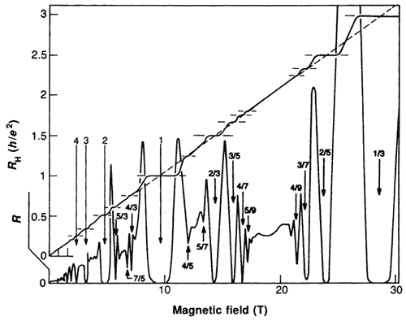
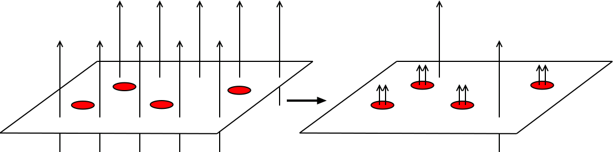
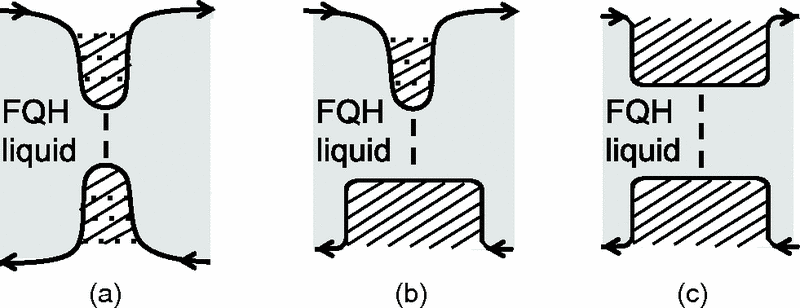
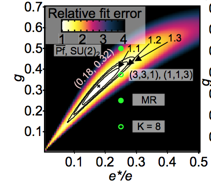
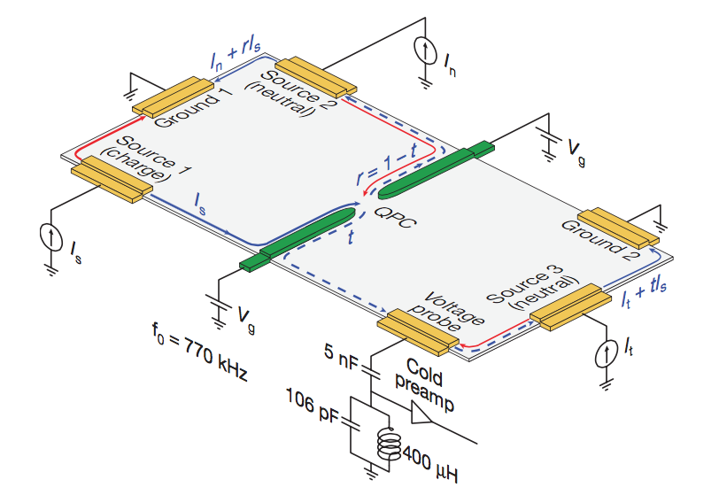
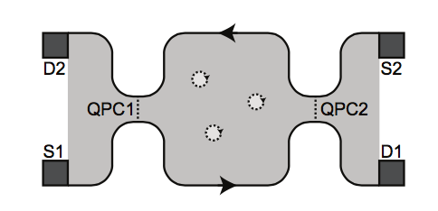

$\nu=5/2$ and the PH-Pfaffian
Philip Zucker, Dima Feldman
Brown University
Ref: Phys. Rev. Lett. 117, 096802
The Classical Hall Effect
$$I_x = \sigma_{xy} V_y$$
Drude Model + Lorentz Force $qv\times B$
2D is an interesting place for conductivity
Add in Quantum Mechanics
Cyclotron orbit $\approx$ N de Brogile wavelengths
Alternatively 1 orbit encloses n flux quantum
$$ \phi_0 = \frac{hc}{e} $$
The Quantum Hall Effect
$ \phi_0 = \frac{hc}{e} $,
$ \nu = \frac{n} {\phi/\phi_0} $
$$ I_x = \frac{\nu e^2}{h} V_y$$
Klitzing
filling factor is ratio of electron density to flux quanta
Measurement of fundamental constants
Perfectly Quantized Plateaus at integer and fractional $\nu$

Laughlin State
$$z= \frac{x+iy}{l_B}$$
$$ \psi_m = \prod_{i < j} (z_i-z_j)^m e^{-\frac{1}{4} \sum_i|z_i|^2} $$
$\nu = \frac{1}{m}$, m odd
By using the holomporhic formalism any polynomial of z is good.
The laughlin state is antisymmettric by contrcuting due to odd m
Higher powers of zero in relative cooridnates suppresses being close to each other.
The hole wavefunction is beautiful. It is a parametized class of electron wavefunctions.
In a sense \zeta means nothing. is merely a place of abscene of
It is also what would appear if a point flux of 2pi was inserted, then the laughin state would turn into this
Quasiholes
$$ \psi_m = \prod_{i} (\zeta-z_i) \prod_{i < j} (z_i-z_j)^m e^{-\frac{1}{4} \sum_i|z_i|^2} $$
Quasiparticle charge: $\frac{e}{m}$
Anyons
Fermions $\psi(x_1,x_2) = -\psi(x_2,x_1)$
Anyons are
The indistuishability of particles is a wonderful thing.
From the persoective of a field theory, it is not unobvious. Modes are interachngables
WHy bosons and fermions? Not obivous. Experiment (aufbau principle ), and then eventually spin-statistics theorem.
In 2+1 dimensions, The paths of particles can get tangled up on each other.
3 dimensions is very important. Only place where knots happen.
The multi-valued wavefunction is a spritiually correct
Non abelian get extra degrees of freedom spread amongts the particles
Histories may not be independant
Composite Fermions
Flux attachment to electrons
$$ \psi_m = \prod_{i < j} (z_i-z_j) \prod_{i < j} (z_i-z_j)^m $$

Electrons in new effective B field
Fix all electrons except 1 and the others are vortices.
Mean field magnetic field
fermions in new effective magnetic field.
Energy gap fit
have to absorb even number of flux to stay fermions
$$\nu = 5/2$$
Even denominator surprise
fermion = odd denominator
Pfaffian
Cooper pairing wavefunction
Edge Thoery of Pfaffian
$$ L = -\frac{2}{4\pi} [\partial_t \phi \partial_x \phi + v_c (\partial_x \phi)^2 ]+ i\psi (\partial_t+v_n \partial_x) \psi $$
Quasiholes
$$ \psi = \prod_i (\zeta-z_i)\text{Pf} (\frac{1}{z_i-z_j}) \prod_{i < j} (z_i-z_j)^2 e^{-\frac{1}{4} \sum_i|z_i|^2} $$
$$ \psi = \text{Pf} (\frac{(\zeta_1-z_i)(\zeta_2-z_j)+(\zeta_1-z_j)(\zeta_2-z_i)}{z_i-z_j}) \prod_{i < j} (z_i-z_j)^2 e^{-\frac{1}{4} \sum_i|z_i|^2} $$
4-quasiholes can be fused in only 2 linearly independent ways
A Mess of States
g $$e^*$$ Non-Abelian?
Pfaffian 1/8 e/4 Yes
331 3/8 e/4 No
113 ~3/8 e/4 No
$$\overline{Pfaffian}$$ 1/2 e/4 Yes
K=8 1/8 e/4 No
$$SU(2)_2$$ 1/2 e/4 Yes
$$\overline{SU(2)_2}$$ 1/2 e/4 Yes
... and more
Mention that 113 is top contedner in list
Probes
Tunneling: $G \sim T^{2g-2}$
Upstream Neutral Mode
Charge of Excitations e/4
Interferometry
Numerics
A lot of key evidence come from the Weizmann Institute!
Point Contact Tunneling

Universal Conductance Scaling: $G \sim T^{2g-2}$
$g$ Raising Effects
Dissipation Coulomb Repulsion Edge Reconstruction Experimental g gives upper bound on theoretical g.

Baer et al. 2014
Lin et. al. 2012
Radu et. al. 2008
assuming e/4 we can see the center there
Upstream Neutral Mode

Can be though of as dipole modes."
Bid, Ofek, et. al. 2010
Interferometry
Fabry-Perot even odd effect. If even # of quasi particles interference. If odd, no interference

Composite Dirac Fermions
D.T. Son (2015)
Son Considers mappings between relativstic QH like in graphene
Dirac cone is like top of topological insualtor
lack of $2k_f$ backscattering
PH-conjugation
Anti-unitary operator that takes empty to full
$$\nu \rightarrow 1- \nu$$
Thermal Conductance
$k \rightarrow \frac{\pi^2 k_B^2 T}{3h} - k$
$\nu = 1/2$
$ k = \frac{\pi^2 k_B^2 T}{6h} $
A new state: PH-Pfaffian D.T. Son (2016)
Bulk-Boundary Correspondence
CFT Wavefunction Conjecture
Edge Thoery
$$ L = -\frac{2}{4\pi} [\partial_t \phi \partial_x \phi + v_c (\partial_x \phi)^2 ]+ i\psi (\partial_t-v_n \partial_x) \psi $$
$\psi(\{z_i\}) \approx P_{LLL} Pf(\frac {1}{\bar{z}_i - \bar{z}_j}) \prod_{i < j} (z_i-z_j)^2 $
Quite similar to pfaffian
One has to be careful with things. z bar needs to be projected
e/4 ✔
Spin-Polarized ✔
Neutral Mode ✔
Tunneling Exponent ✔
Other Experimental Signatures:
Fabry-Perot - Indistinguishable from Pf
Mach-Zehnder:
Current - No dependence on flux.
Enhanced Noise. Under ideal conditions divergent
$$e^* = \frac{e}{1-\cos(2\pi\phi/\phi_0 + 4\gamma)} $$
Takeaway
Still a lot to discover after ~30 years.
Experiments do restrict possible states significantly
PH-Pfaffian and 113 leading candidates
Thank you